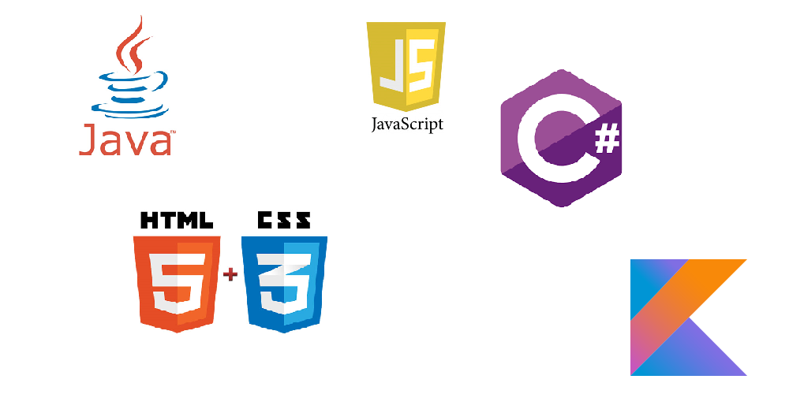

活動内容
プログラミングや、動画作成などを通じて楽しく交流、情報交換することを目的としています。
バリバリ開発するというよりは楽しく話しながら開発していきます。
月に一度ほど部活内で自分の得意なことや、作品などを発表するプレゼンなども行っています
今プレゼンはより重要になってきているのでここで実力をつけましょう！！
今後の目標としては全員で一つのプロジェクトをできたらなと思っています。
もちろん初心者の方でも大丈夫です！先輩などが丁寧に教えてくれます、全くPCが扱えなくても少しでも興味があれば大丈夫です
一緒にあなたのできるを見つけましょう！！
- プログラミング
- 動画作成
- 部活内でのプレゼン
活動内容
プログラミング
プログラミングは主にJava,C#,Kotlin,Web系(HTML,CSS,JavaScript)を主としています。あくまでも自主性なので強制はしません、この中にない言語をやってもらっても構いません。

C#
Java
Kotlin
HTML5 + CSS3 + JavaScript
部員が取り扱っている言語
動画作成
主に三送会やオープンキャンパスで流される動画を作成します。現在部員一名で作成しているのでとても多忙です。もしAdobe Premiereで動画を作成できる方ぜひ来てください！！